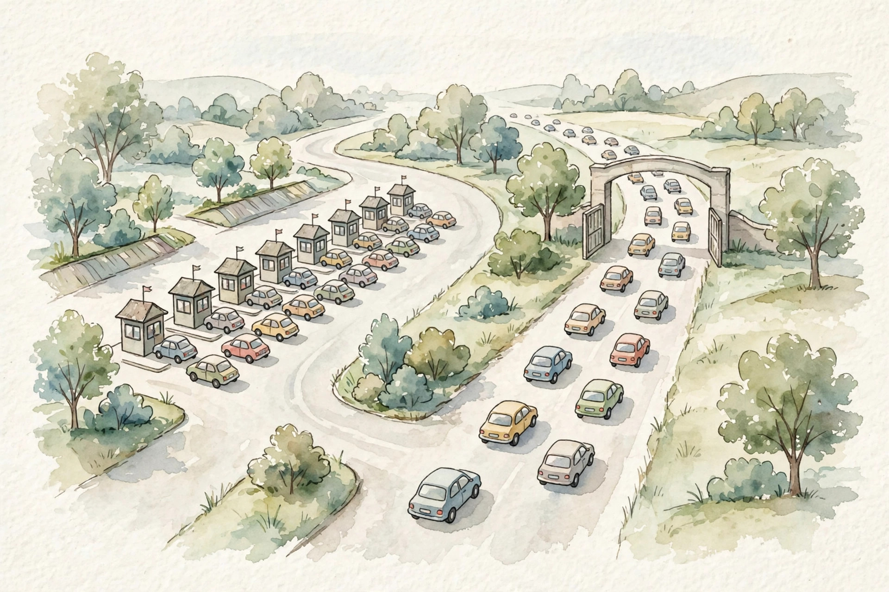

Unit 02 companion · narrated from the lesson document
Twelve concepts, one arc: the GPU memory hierarchy, what a kernel is, and the two numbers, intensity and the roofline, that say why a kernel is slow.
From the lesson The idea, and every number beside it, comes from the cited section of lesson-02-hardware-compilers.md. The phrasing is the companion’s.
Illustration Invented by the companion: an analogy, a toy with made-up values, or a what-if. Never lecture content.
companion Companion voice: the idea above the tag is from the lesson. The generalization below it is the companion’s.
Provenance: no lecture transcript exists for this session. Calendar session titles anchor the lesson to Week 2, Sep 30 (Hardware Aware Algorithm Design: compilers, GPU memory hierarchy, arithmetic intensity, measures of efficiency) and Week 3, Oct 07 (CUDA and GPU programming, fusion, tiling). This page narrates the lesson document, not a video. Claim class for every lesson leaf: PLANNED / SOURCE ATTRIBUTION PENDING. Hardware numbers are the lesson’s labeled toy specs, not vendor claims. Two internal inconsistencies found during the build are disclosed on-page with recomputation (C01 ratio, C10 time units).
From the lessonC01 §2, §3
The same add runs 100x slower in one place than another. What are the places? Think of a kitchen with four zones. Registers are the cook’s hands: fastest, tiny. Shared memory is the countertop: fast, shared within one station. L2 is the pantry down the hall. HBM is the warehouse across town. Same recipe, vastly different trip times.
From the lessonC01 §4, §5
The levels, as labeled toy orders: registers, per thread, about 256 KB per SM, about 1 cycle. Shared memory and L1, per block, 100 to 200 KB per SM, 20 to 30 cycles. L2 cache, device-wide, tens of MB, about 200 cycles. HBM, device-wide, tens of GB, 400 to 800 cycles, about 2 TB/s. Read time for N bytes at bandwidth B is N / B. Small reads are latency-bound, large reads are bandwidth-bound.
From the lessonC01 §6
The toy: read 1 MB. HBM at 2 TB/s: 0.5 us transfer plus about 0.5 us latency, about 1 us total. Shared memory at about 20 TB/s effective: about 0.05 us transfer plus 0.05 us latency, about 0.10 us total. The transfer-only ratio is 0.5 / 0.05 = 10x.
From the lessonC01 §6 Disclosed inconsistency. The lesson puts the ratio at about 20x on bandwidth alone (companion paraphrase). Its own numbers give 0.5 us / 0.05 us = 10x. Separately, the lesson’s check asserts t_hbm greater than 10 * t_smem. Recomputation gives a ratio of exactly 10.0 in exact arithmetic (10.0 in float64), so the strict inequality does not hold as written. companion An order-of-10x reading is sound. The 20x figure and the strict assert are not.
Illustration Read-time probe. Enter bytes, bandwidth, and latency. The widget applies the lesson’s read_time_us formula.
Bytes:
Bandwidth (TB/s):
Latency (us):
From the lessonC02 §2, §3
Who computes element 700 of the output vector? A kernel is a work order pinned to a board. The grid is the full set of crews, where a crew is a block. Each crew holds workers, the threads. Worker i of crew b takes element b × 256 + i. Crews never talk to each other. A new work order is the only channel.
From the lessonC02 §4, §6
Global index = blockIdx.x × blockDim.x + threadIdx.x. With 4 blocks of 256, indices 0 to 1023 cover a 1024-vector exactly. A block holds up to 1024 threads and runs on one SM. A guard on i < N covers the tail when N is not a multiple of the block size. The toy: N = 1000, 256 threads per block. Blocks needed: ceil(1000/256) = 4. Threads launched: 1024. Idle: 24. The guard disables 24 threads.
From the lessonC02 §7, §9
Launch cost is fixed per kernel, which is the fusion argument of C03. The assumption that more blocks are always better breaks: extra blocks queue once the SMs are full. One million blocks of 1 thread each drowns in launch overhead and scheduling while the GPU waits for work assignment.
Illustration Grid planner. Enter N and threads per block. The widget applies the lesson’s grid_for rule.
N:
Threads per block:
From the lessonC03 §2, §3
y = relu(x @ W + b) launches 3 kernels. Why is 1 kernel better? Compare three separate deliveries with one combined truck. Each kernel launch reads its inputs from HBM and writes its outputs back. A fused kernel loads x once, runs matmul, bias, and relu from registers and shared memory, and writes y once. The intermediates skip the warehouse entirely.
From the lessonC03 §4, §6
The toy: x is (64, 8), W is (8, 8), fp16. Unfused traffic: 5 passes over the (64, 8) intermediate at 2 bytes, 5,120 bytes, plus W rereads. Fused: 2 passes, 2,048 bytes. Real scale: a transformer MLP at B = 8, T = 2048, n = 4096 writes a (8, 2048, 16384) intermediate of 512 MiB (the lesson states 536 MB, which matches in decimal units). Fusion removes that write and the reread: about 1 GB of traffic saved per layer per pass.
From the lessonC03 §7, §9
Fusion leaves FLOPs untouched. It changes the bytes moved, and bytes are the bill in the bandwidth-bound regime. The price is compile time: minutes for large graphs. The assumption that compile always helps breaks on graph breaks: data-dependent control flow splits the graph and can make things slower. A loop with a Python if on tensor values breaks the graph each iteration, and compiled time exceeds eager time. Fix the breaks first.
traffic() check: 5,120 unfused, 2,048 fused. One rule: keep intermediates on chip.From the lessonC04 §2, §3
Two kernels do the same FLOPs. One is 10x faster. What single number explains it? Think miles per gallon for compute: FLOPs are the miles, bytes moved are the gallons. A kernel that reuses each byte many times travels far on one tank. One that touches each byte once stays thirsty.
From the lessonC04 §4, §6
I = FLOPs / bytes moved, in FLOP/byte. Matmul (64, 64) by (64, 64): FLOPs = 2 × 64³ = 524,288. Bytes = 2 × (4096 + 4096 + 4096) = 24,576. I = 21.33 FLOP/byte. Matvec (64, 64) by (64,): FLOPs = 2 × 64 × 64 = 8,192. Bytes = 2 × (4096 + 64 + 64) = 8,448. I = 0.97 FLOP/byte. Same weight matrix, 22x different intensity: the matvec spends each weight once while the matmul reuses each weight 64 times. Real scale matmul (2048, 4096) by (4096, 4096) fp16: FLOPs 6.87e10, bytes 6.7e7, I = 1024 FLOP/byte. The decode step: I near 1. This is the training and inference split of Unit 01, now as one number.
From the lessonC04 §7, §9
Intensity decides the regime (C05). Batching raises it by reusing weights across requests, tiling by reusing data on chip. The assumption that high intensity means fast breaks on parallelism: a 64×64 matmul at I = 21 still cannot fill a GPU, so achieved FLOP/s stays low. Check occupancy as well.
From the lessonC05 §2, §3
The kernel does 21 FLOP/byte on a machine with ridge point 150. What is its speed limit? Picture a speed-limit sign drawn with two lines. Below the ridge the road is narrow, so bandwidth sets the limit: speed = beta × I. Above the ridge the engine is the limit: speed = pi. The ridge point I* = pi / beta is where the two lines meet. The toy machine: pi = 3e14 FLOP/s, beta = 2e12 B/s, ridge 150.
From the lessonC05 §4, §6
Attainable = min(pi, beta × I). At I = 21: beta × I = 4.2e13, below pi, so the kernel is memory-bound with a 42 TFLOP/s ceiling, 14 percent of pi. At I = 1024: the ceiling is pi = 3e14, compute-bound. The decode step at I near 1: ceiling 2e12 FLOP/s, under 1 percent of peak. This single picture explains Unit 01’s training and inference split. Treat the roofline as a planning tool, not a profiler: it names your ceiling before you optimize.
From the lessonC05 §7, §9
The assumption that the roof is achievable breaks in practice: real kernels sit below the roof. A kernel at I = 1024 reaching 40 percent of pi is normal, not broken. The roof is a ceiling, not a promise. The invariant: no measured point sits above the roof. A point above the roof indicts the measurement, not the model.
Illustration Roofline calculator. Enter an intensity. The widget applies the lesson’s roofline() with the toy pi and beta and names the bound.
Intensity (FLOP/byte):
From the lessonC06 §2, §3
The same (4, 8) matrix reads 2x slower one way. Why? Picture books on a shelf. Row-major stores whole rows together, so a row read is one grab while a column read is four separate grabs. Same data, different trip count.
From the lessonC06 §4, §6
Row-major (C order): the stride of axis 1 is 1 element. Shape (4, 8) fp16 has strides (16, 2) in bytes. A row read grabs 8 contiguous elements, 16 bytes, in one cache line. A column read touches 4 addresses 16 bytes apart, and each drags in a 128-byte line to use 2 bytes of it: 512 bytes moved for 8 bytes wanted, a 64x waste. Real scale: attention scores (T, T) read along the wrong axis waste the same way, which is why blocked layouts exist. Coalescing, in Unit 04, is this rule on the GPU.
From the lessonC06 §7, §9
Layout leaves FLOPs alone. It changes bytes moved by up to the cache-line waste factor, a free speedup when fixed. The assumption that contiguous is always fastest breaks for column-heavy access: Fortran order wins there. Match layout to access. Transpose once when a tensor is read many times along the slow axis.
From the lessonC07 §2, §3
Loading 4 floats at once is faster than 4 separate loads. What changed? Compare a shopping cart with four separate trips. One wide load moves 16 bytes per instruction. Four narrow loads pay the instruction cost four times and can split across cache lines. Same groceries, fewer trips.
From the lessonC07 §4, §6
A float4 load moves 16 bytes per thread per load. For 1024 fp32 numbers: 1024 scalar loads versus 256 vector loads. A warp of 32 threads on float4 moves 512 bytes in one coalesced pattern. The bytes are the same, the overhead per byte falls. The price is alignment: addresses must be 16-byte aligned, and odd alignment breaks vectorization. For 1M fp32 numbers the counts are 1,000,000 versus 250,000.
From the lessonC07 §7, §9
Vectorization is a constant-factor win, typically 2 to 4x on memory-bound kernels, and it never moves the roofline regime. Let the compiler vectorize simple loops. Write explicit vector types in hot kernels and verify the generated code. The assumption that wider is always better breaks past the alignment limit or on divergent access: float4 over a strided pattern fetches 4x the bytes for the same wanted data.
loads() check. Same bytes, one quarter the instructions.From the lessonC08 §2, §3
1000 kernels of 1 us work each take how long? Think toll booths on a road. Each kernel pays the toll, the launch overhead, plus the road time, the work. A thousand short trips pay a thousand tolls. One long trip pays one. The toy overhead: 5 us per launch.
From the lessonC08 §4, §6
1000 kernels × (5 us + 1 us) = 6 ms. Fused into 1 kernel: 5 us + 1000 us = 1.005 ms. The overhead dominates the unfused total 5 to 1. Real scale: a transformer layer launches about 50 small kernels (norms, biases, dropouts). At 5 us each: 250 us of overhead per layer per step. At 32 layers: 8 ms per step of pure overhead. This is why graphs and fusion matter at small batch.
From the lessonC08 §7, §9
Launch cost is O(1) per kernel. Fewer kernels fix it, not faster kernels. The assumption that overhead is negligible breaks at small batch and holds at large batch: at batch 512 the same 50-kernel layer spends 100 ms on work against 250 us of overhead, 0.25 percent. Measure the ratio before optimizing.

total() check: 6,000 us versus 1,005 us. One rule: fuse or graph.From the lessonC09 §2, §3
The GPU computes for 10 ms and copies for 10 ms. Must the step take 20 ms? Picture two checkout lanes. The compute lane and the copy lane run together on separate hardware: SMs versus the copy engine. While lane 1 computes the current batch, lane 2 copies the next one. The step costs the max, not the sum.
From the lessonC09 §4, §6
A stream is an ordered queue of work on the GPU. Serial: 10 + 10 = 20 ms. Overlapped: max(10, 10) = 10 ms. Saving = min(compute, copy) = 10 ms. Events order the lanes, so the kernel waits on the copy’s event only where data is shared. Prefetching the next micro-batch while the current one computes is the same idea. Dataloader overlap is the CPU-side version (Unit 06).
From the lessonC09 §7, §9
Overlap is free performance on hardware with separate engines. Its price is correctness care: synchronize shared data. The assumption that streams always overlap breaks on the SMs: two compute kernels on separate streams at 100 percent occupancy still serialize. The copy engine is the separate lane, not another stream.
From the lessonC10 §2, §3
The same matmul runs 8x faster with one flag. What did the flag buy? Compare a freight elevator with stairs. Tensor cores are matrix-multiply units that finish a whole tile, such as 16×16×16, per instruction. The stairs, the CUDA cores, do one multiply-add per thread. The elevator demands the cargo in the right crates: shapes, dtypes, alignment.
From the lessonC10 §4, §6
The contract demands fp16, bf16, or int8 inputs, multiples of 8 or 16 on contracted dims, and aligned memory. The toy peaks: 3e14 FLOP/s with tensor cores versus about 2e13 without. A (64, 64, 64) matmul has 524,288 FLOPs. That ratio is the tensor-core gain, about 15x on the toy. Real gains run smaller once memory and overhead count. Qualifying toy shapes keep m, n, k as multiples of 8 in fp16. A (62, 64, 64) matmul may fall back to CUDA cores or pad up.
From the lessonC10 §5 Disclosed inconsistency. The lesson states the toy times as “1.7 us” at 3e14 FLOP/s and “26 us” at 2e13 FLOP/s. Recomputation from its own numbers: 524,288 / 3e14 = 1.75e-9 s = 1.7 ns, and 524,288 / 2e13 = 2.62e-8 s = 26 ns. The units are off by 1000x. The 15x ratio is unaffected and stands.
Illustration Contract checker. Enter m, n, k and a dtype. The widget applies the lesson’s qualifies() rule.
m:
n:
k:
From the lessonC11 §2, §3
fp16 and bf16 are both 16 bits. Why does training prefer bf16? Picture two rulers. The fp16 ruler is short with fine marks: range to 65504, good near zero, 10 mantissa bits. The bf16 ruler is long with coarse marks: fp32 range, 7 mantissa bits. Training needs the long ruler because gradients span scales. Inference needs fine marks near zero because weights are small.
From the lessonC11 §4, §6
fp16 tops out at 65504, so a 1e5 gradient overflows to inf. bf16 keeps the fp32 exponent, so 1e5 survives, but 1.0001 rounds coarsely. The toy: value 100000. fp16 gives inf (overflow). bf16 gives about 99840 (coarse but finite). Value 1e-5: fp16 is fine, bf16 rounds to about 9.8e-6. Halving bytes halves memory traffic and doubles effective bandwidth. The price is numerical, so range or precision needs management.
From the lessonC11 §7, §9
The assumption that bf16 is always safe breaks on tiny updates: a 1e-7 update to a 1.0 weight rounds to zero, so loss can stall in bf16 without loss scaling while fp32 keeps improving. Keep master weights in fp32. The standing split: fp32 for master weights and optimizer, bf16 or fp16 for compute, int8 or fp8 for inference weights (Unit 05).
| Format | Bytes | Range | Precision | Role |
|---|---|---|---|---|
| fp32 | 4 | full | full | master weights, optimizer |
| fp16 | 2 | to 65504 | 10 mantissa bits | compute, fine near zero |
| bf16 | 2 | fp32 range | 7 mantissa bits | training compute |
| fp8 / int8 | 1 | narrow | coarse | inference weights (U05) |
From the lessonC12 §2, §3
The kernel is slow. Is it thirsty (memory) or weak (compute)? Run a triage like a doctor. Test 1 doubles the batch: if speed doubles, the kernel was bandwidth-bound because reuse helped. Test 2 halves the precision: if speed doubles, same verdict. Test 3 computes intensity and checks the roofline side. The tests cost two runs and one division. Run them before any optimization.
From the lessonC12 §4, §6
For a (4096, 4096) fp16 linear layer: batch 1 gives I near 1, memory-bound, ceiling 2 TFLOP/s. Batch 64 gives I near 64, still under the toy ridge of 150, ceiling 128 TFLOP/s. Batch 512 gives I near 512, past the ridge, compute-bound, ceiling 300 TFLOP/s. All three tests should agree. When they disagree, a confounder is at work: low occupancy can make the batch sweep look compute-bound while intensity says memory-bound. Fix occupancy first.
From the lessonC01 to C12
The arc, end to end. Data lives in a hierarchy of four levels, and every algorithm choice is a placement choice (C01). Kernels are work orders: grids of blocks of threads, assigned by index math (C02). Fusion merges the trips and deletes HBM round trips without touching FLOPs (C03). Intensity, FLOPs per byte, is the one number that explains why equal-FLOP kernels differ 22x (C04). The roofline turns intensity into a speed limit with two lines meeting at the ridge (C05). Layouts decide how many bytes a read really moves (C06). Vectorization widens the load and quarters the trips (C07). Launch overhead is O(1) per kernel, so small batch is toll-bound (C08). Streams let compute and copy share the step as a max, not a sum (C09). Tensor cores are a 15x elevator with a shape contract (C10). Precision is a choice between range and precision (C11). And three cheap tests name the bound before any optimization (C12).
From the lessonUnit chapter plate
The unit chapter plate states the tradeoff in one line: “Count bytes first. FLOPs second.” The role bridge: the research engineer opens every profiling session with the three bound tests. MLOps sizes small-batch serving budgets with the launch-overhead math. The FDE carries the roofline as a one-picture answer to why it is slow Where the unit points next: Unit 04 turns fusion and tiling into CUDA practice, and Unit 05 pushes precision down to int8 and fp8. Two disclosures stand on this page: the C01 ratio is 10x, not 20x, and the C10 toy times are nanoseconds, not microseconds, both recomputed from the lesson’s own numbers.
Every lesson on this page, in order. Tap one to return to its chapter.